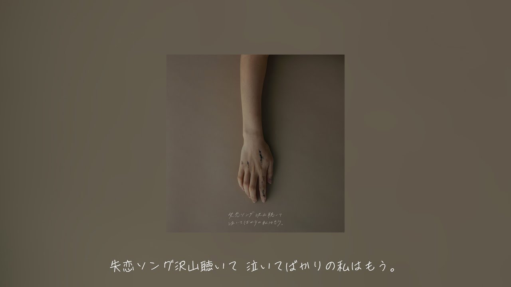

|  |
目標 NTD$1,500,000
25,930,099
贊助人次
7667
|
|
歌詞
潮風に溶けた面影は幻のままで今も
リアルで鮮明な思い出は 何度も何度も繰り返す
融化於海風中的面容現在也依然虛幻
都會重複無數次 在現實裡鮮明的回憶
嘘でもいいからそばにいてよ
もっと近くで
就算是謊言也好讓我待在你身邊
讓我離你更接近一點點
すぐ好きになって
時間だけが過ぎて あぁ…戻りたいな
很快便喜歡上了你
但是卻只有時光飛逝 啊啊...好想回去那時候
失恋ソング沢山聴いて
泣いてばかりの私はもう 捨てたいから 強がらないで 素直になってよ
聽無數首失戀歌
盡是哭泣的我 已經想拋棄了 不想再逞強下去 想變得坦率
お願いあの日の私
あきらめないで傷付いても どうかその手を離さないで 離さないでよ。 なんて遅いよね
祈願那一日的我
即使會因為不放棄而受傷 還請別放開這隻手 不要離開我身邊 但卻已經太遲了
君と撮ったこの写真もまだ
消せないままで今も 最後にくれたあの言葉が 何度も何度も繰り返す
與一起你拍的照片
依然無法消除的現在 你在最後給我的話語 無數次都難以忘懷
嘘でもいいからそばにいてよ
なんて言えたら…
即使是謊言也好讓我待在你身邊
如果說出口的話...
どこに行っても
君を思い出しちゃうの もうやめたいよ
無論去到那裡
都會回想起你的事情 我已經想要放棄了
失恋ソング沢山聴いて
泣いてばかりの私はまだ 君から貰った プレゼントを 飾ったままだよ
在聽完無數首失戀歌曲的我
盡是哭泣的我 擺弄著你所給我的禮物
お願いあの日のきみ
嘘のぬくもりでいいから どうかその手を離さないで 離さないでよ。 なんて遅いよね
祈願那一日的你
即使是善意的謊言 也請別放開這隻手 請別離我而去 但這些也為時已晚
叶わなかった恋ほど
忘れられない もう会えない なんて 言わないでよ 傷つくとわかっていたくせに
如同無法實現的戀情
無法忘懷 已經無法再次相見了 為什麼 不要說出口啊！ 明明早就知道會受傷的
失恋ソング沢山聴いて
泣いてばかりの私はもう 捨てたいから 忘れたいから もう 君のことなんて 忘れちゃうからね
聽無數首失戀歌
盡是哭泣的我已經想拋棄了 想忘記了 已經 對你的事情 已經快要忘記了 |